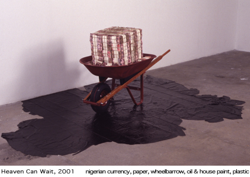

Odili Donald Odita
Riva Gallery
529 West 20th Street, Chelsea
Through Nov. 28, 2001
Florence Lynch Gallery
147 West 29th Street, Chelsea
Through Dec. 1, 2001
|
Holland Cotter
The New York Times
Art in Review
Friday,
November 16, 2001 |
The Florida-based artist Odili Donald Odita spent last summer in Nigeria,
where he was born, and the work in these two shows was done during and
just after his trip. The ink drawings of people and objects at Florence
Lynch have a jotted-down-on-the-spot looseness, but they're also slightly
blurred, as if seen through a haze. The net effect is like a dream diary,
in which everything is both vividly detailed and vague.
Two
large, solid pieces at Riva are similarly elusive. One is a walk-in
version of the many half-finished and abandoned houses found throughout
a country torn by civil war: painted in pretty pastels, it looks like
a chapel or a child's playhouse. In the installation "Heaven Can
Wait," stacks of near-valueless Nigerian currency fill a wheelbarrow,
as if ready to be carted off to the dump. The barrow itself sits on
a spill of black paint, suggesting the oil that is the country's greatest
natural resource and also the cause of its self-destructive power struggles.
What anchors both shows are abstract paintings. Made up of hard-edged
bands of color, they resemble certain modernist abstractions: the work
of Kenneth Noland, say, or Gene Davis. But the colors -ochers, oranges,
forest greens -are earthy and organic, as if inspired by landscapes.
The stripes, rather than regular and symmetrical, are oddly shaped and
fractured by kinks and bends; they tip in off- kilter diagonals.
The interaction of Western modernism and African culture is a dynamic
subject, very much in progress. In Mr. Odita's paintings, which are
the strengths of these shows, he has found a way to give the topic a
visual form that is both intellectually cogent and self-sufficiently
beautiful. The works already look like classics.
Holland Cotter
(c) The New York Times
|